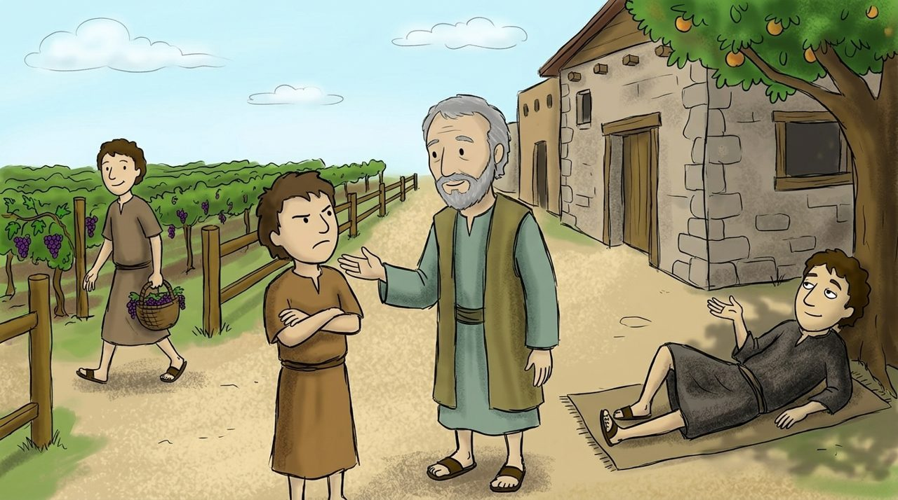

1 · Matta 21:23–32
Söz və əməl
Dini rəhbərlər “Bunları hansı lə edirsən?” deyə soruşanda İsa Yəhyanın vəftizi haqqında sualla cavab verir. Onlar cavab verə bilmədilər.
Sonra iki oğul məsəli gəlir. “Gedirəm” deyib getməyən kiçik oğul zahirən dindar dini rəhbərlər, “istəmirəm” deyib gedən böyük oğul isə vergiyığanlar və fahişələr idi. “Vergiyığanlar və fahişələr Allahın Padşahlığına sizdən qabaq girir.”
Dərindən baxaq · Pis bağbanlar
21:33–46-dakı məsəldə bağ sahibi qulları, sonda isə oğlunu göndərir. Bağbanlar oğlu öldürür. İsa Öz ölümünü xəbər verir və Zəbur 118:22-dən sitat gətirir: “Bənnaların rədd etdiyi daş təməl daşı oldu.”